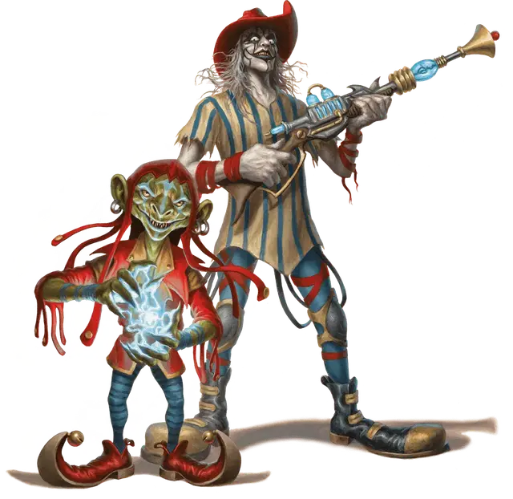

Космический клоун
Space Clown
Среднее Исчадие, обычно хаотично-злое

Класс Доспеха 13
Хиты 58 (9к8 + 18)
Скорость 30 футов
| мод | спас | ||
|---|---|---|---|
| СИЛ | 16 | +3 | +3 |
| ЛОВ | 16 | +3 | +3 |
| ТЕЛ | 14 | +2 | +2 |
| мод | спас | ||
|---|---|---|---|
| ИНТ | 11 | +0 | +0 |
| МДР | 11 | +0 | +0 |
| ХАР | 16 | +3 | +3 |
Навыки Акробатика +5, Выступление +5, Ловкость рук +5
Чувства тёмное зрение 60 футов, пассивное Восприятие 10
Языки Общий, Бездны
Опасность 2 (450 опыта)
Бонус мастерства +2
Особенности
Предсмертная вспышка. Когда хиты клоуна опускаются до 0, он лопается как воздушный шар, разбрызгивая вокруг едкий гнилостный ихор. Все существа в пределах 5 футов от клоуна, когда он взрывается, должны совершить спасбросок Ловкости Сл 12, получая 10 (3к6) урона кислотой при провале или половину этого урона при успехе.
Пищалки. Клоуны носят башмаки, которые пищат при ходьбе. Этот звук слышен в пределах 30 футов. Пока длится эффект Воображаемой формы клоуна его шаги неслышны.
Действия
Шок. . Рукопашная атака заклинанием: +5 к попаданию, досягаемость 5 фт., одна цель Попадание: 17 (4к6 + 3) урона электричеством.
Лучевая пушка. . Дальнобойная атака заклинанием: +5 к попаданию, дистанция 120 фт., одно существо. Попадание: 7 (2к6) урона психической энергией, и если цель — гуманоид с показателем Интеллекта 3 или выше, она должна совершить спасбросок Мудрости Сл 12. При провале, цель считает всё видимое и услышанное ей уморительно смешным, и становится недееспособной на 1 минуту. Цель может повторять спасбросок в конце каждого своего хода, оканчивая эффект на себе в случае успеха.
Использование заклинаний. Базовой характеристикой клоуна является Харизма. Он может накладывать следующие заклинания, не нуждаясь в материальных компонентах:
• Неограниченно: волшебная рука [mage hand], дружба [friends], фокусы [prestidigitation];
• 1/день каждое: отражения [mirror image], паук [spider climb].
Бонусные действия
Воображаемая форма (3/день). Клоун окутывает себя и всё, что он несёт и носит иллюзией, которая делает его похожим на другое существо такого же или меньшего размера (например, ребенка) или на объект, достаточно маленький, чтобы поместиться в пространстве клоуна (например, парящий воздушный шар). Поддержание этого эффекта требует от клоуна концентрации (как при концентрации на заклинании), и иллюзия не выдерживает физической проверки. Существо, которое может видеть иллюзорную форму клоуна, может действием совершить проверку Мудрости (Проницательность) Сл 15, рассеивая иллюзию и распознавая истинную форму при успехе.
Описание
Космические клоуны — обитатели системы Дикого космоса, известной как космос Клоунов. Люди, некогда населявшие три кольцеобразных мира этой системы, свято верили в бога пиршества. Их церемонии поклонения были сосредоточены на праздниках и полны легкомыслия. Со временем их счастье стало зависеть от всё возрастающего потребления эликсира под названием «Будоражащая радость». Только после того, как они стали зависимыми, выяснилось, что жрецы их веры изготавливали этот эликсир из демонического ихора и нектара цветка бозо. В конечном счете, «Будоражащая радость» превращала верующих в дьявольских существ и «благословляла» их клоунским обличьем.
Космические клоуны получили свои первые штурвалы чарохода [spelljamming helm] у торговцев доваров (см. раздел «Довары» ранее в этой книге). Последовавшие за этим посещения других систем Дикого космоса привели к контактам с множеством других народов. Благодаря этим встречам любовь и страх перед клоунами распространились по всем уголкам мультивселенной, как и они сами.
Мародерствующие космические клоуны питаются плотью гуманоидов. Они путешествуют по космосу на причудливо украшенных кораблях и иногда останавливаются в населенных мирах. Там они ставят карнавальные палатки, чтобы заманить в свои лапы любопытных зрителей. Они вооружены ярко раскрашенными лучевыми пушками, которые работают только в их руках. Для остальных эти игрушки бесполезны/